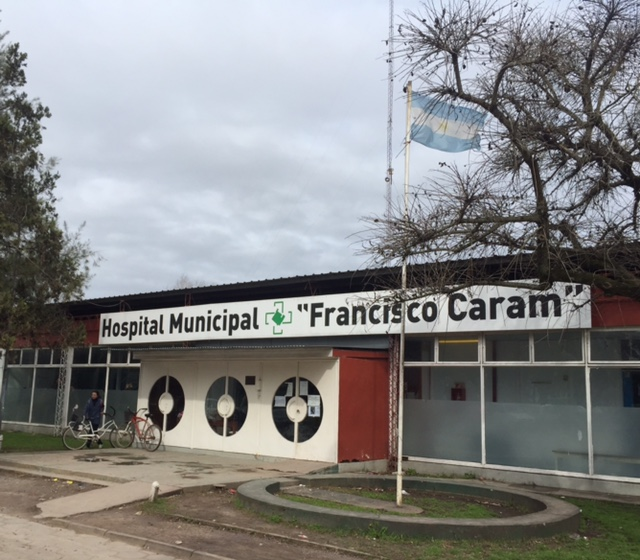
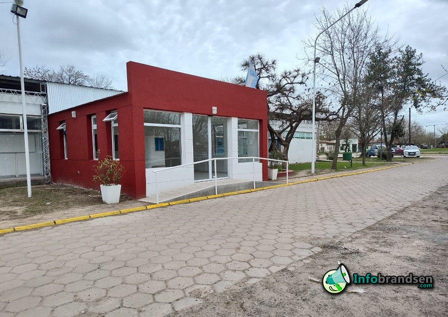
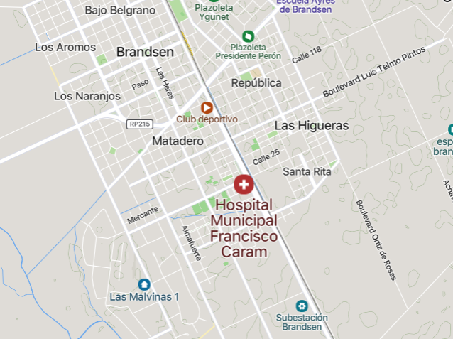
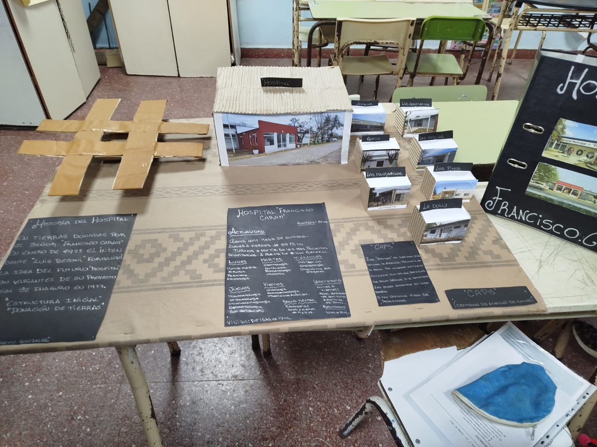
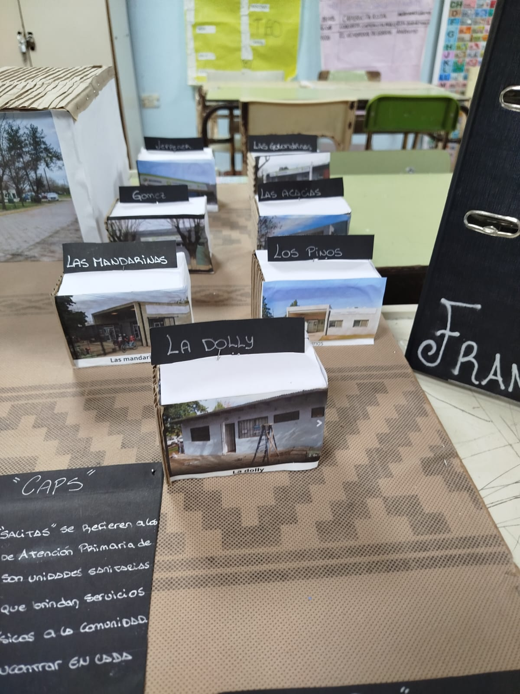
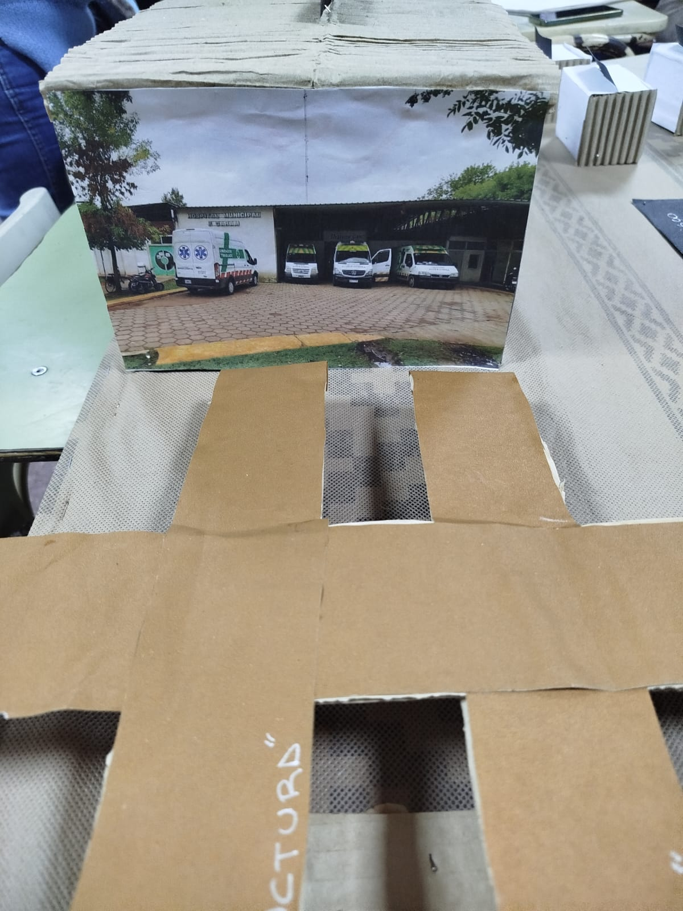

1° Año - Hospital Francisco Caram
Contexto Problematizador:
Ambiente y salud: conflictos en la construcción de un desarrollo sustentable.
Situación Problemática:
¿Cómo afectan la atención deficiente y la falta de recursos en el hospital Francisco Caram de Brandsen a la salud de la comunidad?




Ubicacion:
RUTA PROVINCIAL 29 KM 1 Y 1/2. CORONEL BRANDSEN, 1980. BRANDSEN, Buenos Aires Argentina

Historia del Hospital:
- terreno:Las tierras fueron donadas por el señor Francisco Caram, en enero de 1971, durante la gestion del intendente Luis Beconi, El proyecto se inauguró en el año 1977
- Origen del Nombre: en el año 1984, con motivo del fallecimiento de quien fuera el donante de las tierras donde se construyó el Hospital Municipal, se procedió a la sanción de la Ordenanza Nro 38 de fecha 5 de octubre de 1984, la cual impuso al nosocomio el nombre de Hospital Municipal “ Francisco Caram”
Problematicas del Hospital:
- Problemas:El hospital, Francisco Caram al ser público, enfrenta una serie de problemáticas que impactan su funcionamiento y la calidad de la atención que ofrecen.
- Entre las más comunes: Se encuentran la falta de recursos (humanos, financieros, materiales), la deficiente infraestructura, problemas de gestión administrativa, y fallas en la comunicación interna.
- problemáticas específicas: infecciones intrahospitalarias, errores de medicación y riesgos laborales para el personal
Audios
Entrevista a Maria "Chichita" Salamé:
Ultima entrevista de Chichita:
Recordamos a una gran persona:




Audios
Entrevista Alfredo Carlos del Rio:
Presentacion del doctor:
Entrevista alfredo Carlos DelRio:
Respuesta del DR. del Rio Problemáticas: